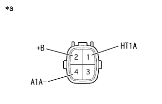

クウネンヒ センサ 単体点検
印刷
準備品一覧
1. クウネンヒ センサ点検

SST(トヨタエレクトリカルテスター)を使用して、端子間の抵抗を測定する。
SST
09082-00030
09083-00170
抵抗値
点検端子
測定条件
基準値
1 (HT1A) - 2 (+B)
20°C
1.8 to 3.4Ω
1 (HT1A) - 4 (A1A-)
常時
10 kΩ以上
イラスト内指示文字
*a
コネクター非接続状態
(クウネンヒ センサ)